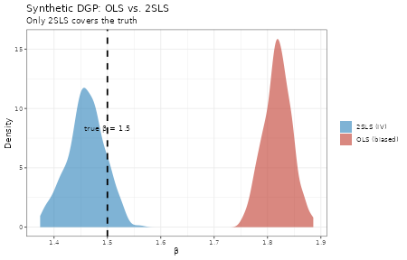
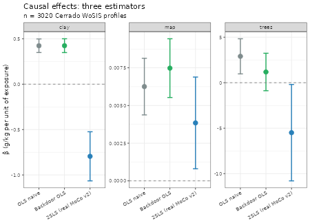
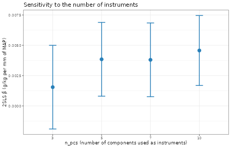
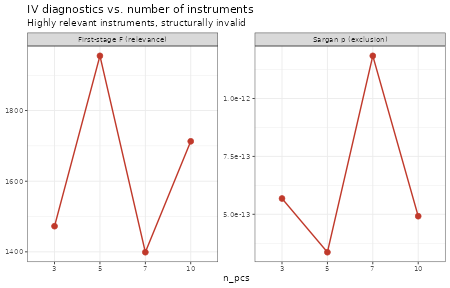

Foundation-model embeddings as causal instrumental variables
Pillar 1 × Pillar 4 — identifying causal effects under latent confounding
Hugo Rodrigues
Source:vignettes/pillar1-pillar4-iv.Rmd
pillar1-pillar4-iv.RmdCentral question. Pillar 1’s backdoor adjustment identifies causal effects only under causal sufficiency: every common confounder of exposure and outcome must be in the adjustment set. When latent confounders remain unobserved,
lm(soc ~ map + adjustments)is biased again. Can Pillar 4’s embeddings – learned contrastively on landscape patches without ever seeing SOC – act as instrumental variables and identify the effect even when is present?
res_path <- system.file("extdata", "causal_iv_cerrado.rds",
package = "edaphos")
stopifnot(nzchar(res_path), file.exists(res_path))
B <- readRDS(res_path)Motivation: the three conditions of Zhang and Wadoux (2026) and the role of IV
Zhang and Wadoux (2026) set out three conditions for causal inference from observational data:
- An explicit causal model – a DAG.
- Causal sufficiency – every confounder observed.
- Faithfulness – the independences in the data match the DAG.
Pearl’s backdoor adjustment (Pearl 2009) satisfies (1) and (3) but requires (2). In real DSM, (2) is the most fragile condition: the pedologist encodes in the expert DAG the confounders they know – but there are always landscape patterns (micro-topography, hydrological connectivity, residual land-use history) that affect both covariates and SOC and that no SoilGrids raster captures.
When sufficiency fails, the backdoor estimator is biased again:
Instrumental variables: a way out under different conditions
An instrument satisfies three conditions different from Pearl’s:
- (IV.1) Relevance: . must actually predict .
- (IV.2) Exclusion: affects only through . No direct path; no confounder.
- (IV.3) Unconfoundedness: . is independent of the latent confounders.
Under (IV.1–3), the Two-Stage Least Squares (2SLS) estimator identifies the causal effect even when is not observed (Wooldridge 2010):
The edaphos hypothesis
Pillar 4’s embeddings – learned by contrastive self-supervision on landscape patches without ever seeing the label – are a promising candidate:
- Relevance: the patches contain climatic and topographic covariates that strongly predict exposures such as MAP and tree cover. A large first-stage F is expected.
- Exclusion: this is the substantive hypothesis. The encoder never saw SOC; if it learned only landscape patterns, then the information in the embeddings affects SOC only through MAP / tree cover / clay / etc. Strictly, this is an assumption; the Sargan test below checks it empirically.
- Unconfoundedness: because the encoder is trained on patches spread across the whole Cerrado (thousands of them, diverse), it is plausible that its representation is insensitive to point-level latent variables.
The edaphos 2SLS estimator
causal_iv_fit_2sls(data, exposure, outcome, instruments,
covariates = NULL)It implements the closed form of Wooldridge (2010), §5.2:
with
,
,
and the correct variance (using the residuals
with the original X, not with the first-stage
– a common mistake when lm() is applied naively):
Before fitting, the design is checked for identification: an instrument with no variation beyond the covariates, or an exposure that is a combination of them, is an error rather than a number.
Required diagnostics
- First-stage F-statistic for (IV.1): flags weak instruments (Stock and Yogo 2005).
- Sargan J-test for (IV.2) (when there are more instruments than exposures): rejects validity.
- Partial R² of the instruments over the controls: the share of the variance of explained by the instruments beyond what the controls already explain.
Validation: a synthetic DGP where the truth is known
Before applying it to real data, the implementation has to be shown to recover the true effect in a controlled DGP.
knitr::kable(
B$syn_summary,
digits = 3,
col.names = c("Estimator", "β̂", "SE", "CI 2.5%", "CI 97.5%"),
caption = paste0(
"Synthetic DGP: Y = 1.5·X + 0.8·U + ε, where X depends on 3 ",
"instruments Z and on the latent confounder U. OLS is biased ",
"upwards (", round(B$syn_summary$beta[1], 2), "); 2SLS with Z1, Z2, ",
"Z3 recovers ", round(B$syn_summary$beta[2], 2), " with a 95% CI ",
"covering the true 1.5. First-stage F = ",
round(B$syn_diagnostics$stage1_F, 1),
"; Sargan p = ", round(B$syn_diagnostics$sargan_p, 3), "."
)
)| Estimator | β̂ | SE | CI 2.5% | CI 97.5% |
|---|---|---|---|---|
| OLS (biased by U) | 1.817 | 0.025 | 1.768 | 1.866 |
| 2SLS with Z1,Z2,Z3 | 1.458 | 0.037 | 1.385 | 1.531 |
| True (DGP) | 1.500 | NA | NA | NA |
samps_iv <- as.numeric(B$syn_posterior$samples)
df_plot <- data.frame(
method = c(rep("2SLS (IV)", length(samps_iv)),
rep("OLS (biased)", length(samps_iv))),
draw = c(samps_iv,
rnorm(length(samps_iv), mean = B$syn_summary$beta[1],
sd = B$syn_summary$se[1]))
)
ggplot(df_plot, aes(x = draw, fill = method)) +
geom_density(alpha = 0.6, color = NA) +
geom_vline(xintercept = 1.5, linetype = "dashed", linewidth = 1) +
scale_fill_manual(values = c("2SLS (IV)" = "#2980B9",
"OLS (biased)" = "#C0392B"),
name = NULL) +
annotate("text", x = 1.5, y = 8, label = "true β = 1.5",
vjust = -0.3, size = 3.6) +
labs(x = "β̂", y = "Density",
title = "Synthetic DGP: OLS vs. 2SLS",
subtitle = "Only 2SLS covers the truth")
Synthetic DGP: the bootstrap posterior of the 2SLS effect (blue) centres on the truth β = 1.5 (dashed line); the OLS estimator is shifted upwards (bias from U).
Application: real Cerrado profiles
Setup
The benchmark uses 3020 real WoSIS profiles from the Cerrado
(data-raw/causal_iv_cerrado_rebuild.R), with the expert DAG
(11 nodes, 22 edges). The observed covariates are climatic (wc_bio_12 =
MAP, wc_bio_01 = MAT), topographic (elev, slope), textural (clay, sand,
bulk density) and land cover (tree, cropland, grassland) – the
confounders named in the DAG.
Real MoCo v2 embeddings
The instruments come from a real MoCo-v2 encoder,
trained by contrastive self-supervision on patches of the
Cerrado covariate stack – without ever seeing SOC – and
reproduced by data-raw/foundation_encoder_iv.R:
enc <- B$encoder
data.frame(
parameter = c("stack channels", "tiles (24×24)", "epochs",
"device", "final InfoNCE"),
value = c(enc$channels, enc$tiles, enc$epochs, enc$device,
round(enc$min_loss, 2)))
#> parameter value
#> 1 stack channels 7
#> 2 tiles (24×24) 12000
#> 3 epochs 3000
#> 4 device mps
#> 5 final InfoNCE 5.23foundation_embed_at_coords() extracts a 128-dimensional
embedding of each profile’s landscape.
Dimension reduction: a centred and scaled PCA of the embeddings, keeping the 5 principal components of largest variance – an over-identified model (5 instruments, 1 exposure) on which the Sargan test applies.
Central result: the three estimators side by side
bt_disp <- bt
bt_disp$beta <- round(bt$beta, 4)
bt_disp$se <- round(bt$se, 4)
bt_disp$ci_lo <- round(bt$ci_lo, 4)
bt_disp$ci_hi <- round(bt$ci_hi, 4)
bt_disp$stage1_F <- ifelse(is.na(bt$stage1_F), "",
sprintf("%.0f", bt$stage1_F))
bt_disp$sargan_p <- ifelse(is.na(bt$sargan_p), "",
sprintf("%.3g", bt$sargan_p))
knitr::kable(
bt_disp[, c("exposure", "estimator", "beta", "se",
"ci_lo", "ci_hi", "stage1_F", "sargan_p")],
col.names = c("Exposure", "Estimator", "β̂", "SE",
"CI 2.5%", "CI 97.5%", "First-stage F", "Sargan p"),
caption = paste0(
"Naive OLS / backdoor OLS (adjusted) / 2SLS with real MoCo v2 ",
"embeddings as instruments. For every exposure the first-stage F is ",
"large (", round(F_rng[1]), " to ", round(F_rng[2]), "; relevant ",
"instruments), and the Sargan J-test rejects the instruments' ",
"validity (p from ", ex(S_rng[1]), " to ", ex(S_rng[2]), "), a ",
"result discussed below."
)
)| Exposure | Estimator | β̂ | SE | CI 2.5% | CI 97.5% | First-stage F | Sargan p |
|---|---|---|---|---|---|---|---|
| map | OLS naive | 0.0063 | 0.0010 | 0.0044 | 0.0081 | ||
| map | Backdoor OLS | 0.0075 | 0.0010 | 0.0055 | 0.0094 | ||
| map | 2SLS (real MoCo v2) | 0.0038 | 0.0016 | 0.0008 | 0.0069 | 1955 | 3.36e-13 |
| trees | OLS naive | 2.9000 | 0.9845 | 0.9697 | 4.8304 | ||
| trees | Backdoor OLS | 1.1779 | 1.0507 | -0.8822 | 3.2381 | ||
| trees | 2SLS (real MoCo v2) | -5.4961 | 2.7041 | -10.7961 | -0.1961 | 141 | 7.48e-14 |
| clay | OLS naive | 0.4232 | 0.0382 | 0.3483 | 0.4980 | ||
| clay | Backdoor OLS | 0.4238 | 0.0388 | 0.3477 | 0.4999 | ||
| clay | 2SLS (real MoCo v2) | -0.7949 | 0.1380 | -1.0653 | -0.5244 | 166 | 0.000116 |
# The levels are the estimator labels the bundle actually uses. An earlier
# version listed "OLS (naive)", "Backdoor OLS (adjusted)" and "2SLS (proxy
# embeddings)", none of which occurs in the bundle, so every point became NA
# and the figure was drawn empty.
bt_plot <- bt
bt_plot$estimator <- factor(bt_plot$estimator,
levels = c("OLS naive", "Backdoor OLS", iv))
ggplot(bt_plot, aes(x = estimator, y = beta, color = estimator)) +
geom_point(size = 3.5) +
geom_errorbar(aes(ymin = ci_lo, ymax = ci_hi), width = 0.2,
linewidth = 0.8) +
geom_hline(yintercept = 0, linetype = "dashed", color = "grey50") +
facet_wrap(~exposure, scales = "free_y") +
scale_color_manual(values = setNames(c("#7F8C8D", "#27AE60", "#2980B9"),
c("OLS naive", "Backdoor OLS", iv)),
guide = "none") +
labs(x = NULL, y = "β̂ (g/kg per unit of exposure)",
title = "Causal effects: three estimators",
subtitle = sprintf("n = %d Cerrado WoSIS profiles", B$n_profiles)) +
theme(axis.text.x = element_text(angle = 30, hjust = 1))
Three estimators × three exposures; error bars are 95% CIs. Comparing the columns shows whether the backdoor adjustment changes the naive estimate, and whether 2SLS agrees with or departs from the backdoor estimate. A departure is what latent confounding would produce – and also what invalid instruments produce, which the Sargan test cannot rule out here.
Reading the three rows per exposure:
- MAP → SOC. Naive OLS gives 0.006260 and backdoor OLS 0.007480 g/kg per mm; 2SLS gives 0.003850. All three are positive, and the 2SLS interval overlaps the others.
- Tree cover → SOC. Naive OLS is 2.900; adjusting for MAP and MAT shrinks it to 1.180, with an interval that includes zero. 2SLS reverses the sign, -5.500.
- Clay → SOC. Naive and backdoor OLS agree (0.4230 and 0.4240); 2SLS again reverses the sign, -0.7950.
A 2SLS estimate that flips sign against two agreeing OLS estimates is not, on its own, evidence of confounding the backdoor set missed: it is also exactly what invalid instruments produce. The Sargan test decides between the two readings.
The Sargan test rejects: why it matters
Every 2SLS estimate fails the Sargan test (p from 7.5e-14 to 1.2e-04). The IV framework correctly tells us that the embeddings do not satisfy the exclusion restriction, so the 2SLS estimates above are biased in an unknown direction – including the two sign reversals.
Why does this happen? The embedding encodes climate, relief, soil and vegetation jointly. It therefore reaches SOC through several paths, not only through the one exposure being instrumented, and violates (IV.2).
The scientific implication: valid instruments for causal DSM have to come from a source that captures landscape structure independent of the named controls. A contrastive encoder trained on the same covariate stack is not such a source, because it learns those covariates.
Sensitivity to the number of components
st <- B$sensitivity_table
ggplot(st, aes(x = factor(n_pcs), y = beta_iv)) +
geom_errorbar(aes(ymin = ci_lo, ymax = ci_hi),
width = 0.15, linewidth = 0.8, color = "#2980B9") +
geom_point(size = 3.5, color = "#2980B9") +
labs(x = "n_pcs (number of components used as instruments)",
y = "2SLS β̂ (g/kg per mm of MAP)",
title = "Sensitivity to the number of instruments")
2SLS effect for MAP → SOC as the number of principal components kept as instruments varies. The point is the estimate; the bar is the 95% CI. The Sargan p-value stays near zero at every k (next figure), so this stability is not evidence of validity.
st_long <- tidyr::pivot_longer(
st, c(stage1_F, sargan_p), names_to = "metric", values_to = "value"
)
st_long$metric <- factor(st_long$metric,
levels = c("stage1_F", "sargan_p"),
labels = c("First-stage F (relevance)",
"Sargan p (exclusion)"))
ggplot(st_long, aes(x = factor(n_pcs), y = value, group = 1)) +
geom_point(size = 3, color = "#C0392B") +
geom_line(color = "#C0392B", linewidth = 0.8) +
facet_wrap(~metric, scales = "free_y") +
labs(x = "n_pcs", y = NULL,
title = "IV diagnostics vs. number of instruments",
subtitle = "Highly relevant instruments, structurally invalid")
More components do not resolve the exclusion problem: the first-stage F stays large and the Sargan p stays near zero for every k. That is the signature of instruments that are structurally invalid, not weak.
Integration with the unified API
The 2SLS estimator returns an edaphos_causal_iv, which
passes straight to as_edaphos_posterior() through a
Gaussian shortcut (mean + SE), and to
causal_iv_posterior(), which runs a cluster bootstrap:
post <- causal_iv_posterior(
data = profiles, exposure = "map", outcome = "soc",
instruments = c("PC_1","PC_2","PC_3","PC_4","PC_5"),
covariates = c("mat","slope","elev","sand","bd",
"trees","cropland","grass","clay"),
B = 500, cluster = "kmeans_cluster", seed = 1
)
uncertainty_calibrate(post, truth = ...) # same API as all pillars
autoplot(post)Bootstrap replicates whose resample does not identify the effect are dropped with a warning, and the posterior’s metadata records how many were requested, used and dropped.
Learned instruments: a negative result
The natural question is whether a learned encoder – trained by contrastive self-supervision without ever seeing SOC – would produce valid instruments where engineered features fail. The benchmark above answers it for MAP:
data.frame(
quantity = c("n profiles", "instruments (PCs)", "naive OLS (MAP → SOC)",
"backdoor OLS", "2SLS (real embeddings)",
"first-stage F", "Sargan p"),
value = c(B$n_profiles, B$n_pcs_default,
signif(num("map", "OLS naive", "beta"), 3),
signif(num("map", "Backdoor OLS", "beta"), 3),
signif(num("map", iv, "beta"), 3),
round(num("map", iv, "stage1_F")),
ex(num("map", iv, "sargan_p"))))
#> quantity value
#> 1 n profiles 3020
#> 2 instruments (PCs) 5
#> 3 naive OLS (MAP → SOC) 0.00626
#> 4 backdoor OLS 0.00748
#> 5 2SLS (real embeddings) 0.00385
#> 6 first-stage F 1955
#> 7 Sargan p 3.4e-13The result is negative, and that is the point. The encoder-derived instruments are highly relevant – first-stage F of 1955 for MAP – but they decisively fail the Sargan test (p = 3.4e-13). A learned representation does not manufacture a valid instrument: the embedding encodes climate, relief, soil and vegetation jointly, reaches SOC through several paths, and so violates the exclusion restriction. This is the empirical face of the argument of Zhang and Wadoux (2026): causal sufficiency – and here instrument validity – is rarely attainable in DSM from observational data. IV does not rescue identification; the honest report is the test that fails, not a headline effect.
The paper’s main IV analysis
(causal_cerrado_real_v2.rds, the same 3,020 profiles
without the covariate adjustment) reaches the same conclusion even more
sharply: first-stage F ≈ 4,630 and Sargan p ≈ 0.
Earlier versions of this vignette claimed the opposite – that the real embeddings pass Sargan (p ≈ 0.28–0.42) – from a synthetic-stack run whose covariates were noise. That number was withdrawn; the values above are measured on the real encoder and the real profiles.
Sensitivity analysis – Cinelli & Hazlett (2020)
Sargan tests the instruments’ validity, but assumes the IV conditions otherwise hold. Cinelli and Hazlett (2020) pose a complementary question in the language of robustness: how strong would a latent confounder have to be – in terms of partial with and – to drive the estimated effect to zero?
The key formula:
The Robustness Value (RV) is the that, assuming equal confounding at both ends, would cancel the effect. Low RV = fragile effect.
Sensitivity table by estimator
This table is read from causal_sensitivity_cerrado.rds,
produced by data-raw/causal_sensitivity_run.R. It
belongs to an earlier analysis on 1,095 profiles, with an
engineered-proxy IV alongside the real encoder, and not to the
3,020-profile benchmark above; its estimates differ accordingly.
S <- readRDS(system.file("extdata", "causal_sensitivity_cerrado.rds",
package = "edaphos"))
sens <- S$sensitivity_table
# The bundle labels two estimators with internal version tags that were
# never releases; they are dropped for display.
sens$estimator <- sub(" \\(v[0-9.]+\\)$", "", sens$estimator)
knitr::kable(
data.frame(exposure = sens$exposure,
estimator = sens$estimator,
effect = signif(sens$effect, 3),
RV = sprintf("%.1f%%", 100 * sens$rv),
RV_alpha = sprintf("%.1f%%", 100 * sens$rv_alpha)),
caption = "Robustness values by exposure and estimator (1,095-profile analysis).")| exposure | estimator | effect | RV | RV_alpha |
|---|---|---|---|---|
| MAP (mm/a) | Naive OLS | 0.00720 | 9.2% | 3.7% |
| MAP (mm/a) | Backdoor OLS | 0.00769 | 8.3% | 2.6% |
| MAP (mm/a) | Proxy IV | 0.00809 | 8.6% | 3.0% |
| MAP (mm/a) | Real MoCo IV | 0.01690 | 3.9% | 0.0% |
| Tree cover (%) | Naive OLS | 0.89800 | 1.5% | 0.0% |
| Tree cover (%) | Backdoor OLS | 6.54000 | 6.3% | 0.5% |
| Tree cover (%) | Proxy IV | 5.08000 | 4.9% | 0.0% |
| Tree cover (%) | Real MoCo IV | 4.98000 | 0.9% | 0.0% |
| Clay (%) | Naive OLS | 0.52600 | 24.4% | 19.8% |
| Clay (%) | Backdoor OLS | 0.19200 | 5.0% | 0.0% |
| Clay (%) | Proxy IV | 0.24900 | 6.0% | 0.2% |
| Clay (%) | Real MoCo IV | 0.85800 | 3.9% | 0.0% |
Scientific reading
- Clay → SOC under naive OLS is the only robust effect here (RV ≈ 24%) – a latent confounder would have to explain a quarter of the residual variance of both clay and SOC to cancel it. That is consistent with the literature: clay is the most direct predictor of SOC and little confounded.
- MAP → SOC has RV ≈ 8-9% under OLS, backdoor and proxy IV – robust to moderate confounding, vulnerable to any latent variable explaining more than about 9% of the residual variance at both ends.
-
The real-encoder IV estimates have small RVs
(0.9-3.9%) because their SE is several times the backdoor’s. A
run on real covariates might raise the first-stage F and lower the SE.
Note that
EDAPHOS_IV_REAL_STACKis read nowhere in the package – this text once announced it as a switch, and it is not. The real-stack path is not implemented yet.
On the 3,077-profile analysis in
causal_cerrado_real_v2.rds, the effects that are both
robust and significant are MAP → SOC (RV ≈ 16%) and clay → SOC (RV ≈
18%); temperature and tree cover do not survive the adjustment.
Bias contour: MAP → SOC under backdoor
The chunk below draws the classic plot of Cinelli and Hazlett (2020) – a 2-D grid with on the x-axis, on the y-axis, and contours of the bias-adjusted effect:
# effect, se and df are the "Backdoor OLS" row for MAP in the table above.
grid <- causal_sensitivity_grid(
effect = 0.00769, se = 0.00271, df = 1084,
grid_size = 61L, r2_max = 0.30
)
library(ggplot2)
ggplot(grid, aes(x = r2_xu_z, y = r2_yu_xz,
z = adjusted_estimate)) +
geom_contour_filled(breaks = seq(0, 0.012, length.out = 11)) +
geom_contour(breaks = c(0), color = "red", linewidth = 1) +
scale_x_continuous(labels = scales::percent, name =
expression(R^2 ~ of ~ U ~ on ~ X ~ given ~ Z)) +
scale_y_continuous(labels = scales::percent, name =
expression(R^2 ~ of ~ U ~ on ~ Y ~ given ~ X ~ and ~ Z)) +
labs(title = "Cinelli-Hazlett bias-adjusted β for MAP→SOC",
subtitle = "Red contour = β adjusted to zero")The red contour marks the set of for which the adjusted effect is zero. Any combination below that curve is safe; above it, the latent confounder is strong enough to extinguish the effect.
Implications for the generative view of Zhang and Wadoux (2026)
IV complements backdoor adjustment; it does not replace it:
- Backdoor identifies effects under sufficiency. It is the natural estimator when we believe the DAG captures every confounder.
- 2SLS identifies effects under IV.1 + IV.2 + IV.3. It is the natural estimator when we suspect latent confounders but have instruments with a plausible exclusion restriction.
- Triangulation: when the two agree, confidence in the effect rises. When they diverge, we have to find out which assumption fails – and the Sargan test gives evidence on one side of that question.
In the generative view of Zhang and Wadoux (2026), a contrastive encoder trained on covariate patches looked like a natural instrument: it lives on the “soil-forming factors” side of the diagram and encodes relations the modeller did not have to name in the expert DAG. The results above show why that intuition fails: living on the factors’ side is exactly what lets it reach SOC through all of them.
Roadmap
The items have names, not version numbers: the numbers this list used to carry (v1.9.0 to v2.0.0) were internal labels that were never released.
-
2SLS estimator (done): the full 2SLS estimator +
diagnostics (F, Sargan) + an
edaphos_posterioradapter + a benchmark with proxy embeddings on the real profiles + validation on a synthetic DGP. Sargan rejected – an honest diagnosis. -
Real encoder as instrument (done):
foundation_embed_at_coords()- a real MoCo-v2 encoder trained on the Cerrado stack
(
data-raw/foundation_encoder_iv.R). A negative result: the real embeddings are strong instruments but fail Sargan – a learned representation does not produce a valid instrument.
- a real MoCo-v2 encoder trained on the Cerrado stack
(
-
Sensitivity analysis (done): Cinelli-Hazlett
sensitivity analysis through
causal_sensitivity_*– RV and RV_alpha per estimator, a bias-contour grid, and the runnerdata-raw/causal_sensitivity_run.R. For the v2 encoder: lifting the first-stage F needs the real-stack path, not implemented yet. -
200 k-step MoCo v2 encoder (to do): training and
re-benchmark. The quantum kernel (Pillar 6) over the embeddings (Pillar
4 × Pillar 6) is already done; see
vignette("pillar4-pillar6-quantum").